You can configure your email client to search directly your Gmail Address Book
for email addresses, via LDAP protocol.
Typically this will mean as you begin to type in the
'To' field of the email client it will search the Gmail/LDAP directory after a pause
or after each character for any names that match (surnames and/or forenames).
With this feature you can avoid double/triple address book maintenance.
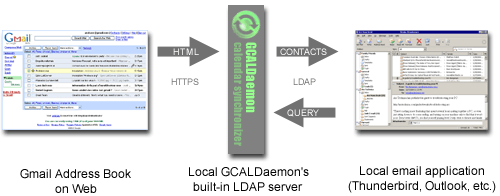
1) Install GCALDaemon (Java 1.5 required).
2) Start password encoder ('password-encoder.bat' or 'password-encoder.sh').
Input your Gmail password and press ENTER. Copy the encoded password.
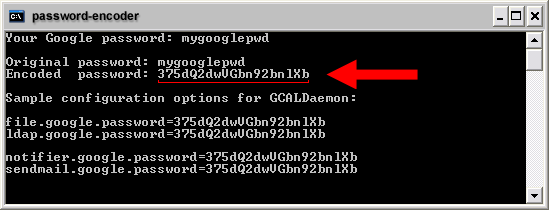
3) Edit the 'gcal-daemon.cfg' file with your text editor.
A) Set the 'ldap.enabled' property to 'true'
B) Set the 'ldap.google.username' property to your Gmail address
C) Set the 'ldap.google.password' property to your encoded password
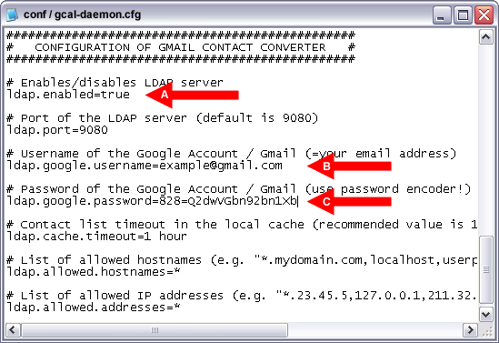
To set up multiple account listeners, you need to configure
an username/password pair for each of the Google Accounts you want to browse
(the first account definition is unindexed, the others are indexed from '2'):
# First Address Book
ldap.google.username=example@gmail.com
ldap.google.password=31260V7mc34jV22c
# Second Address Book
ldap.google.username2=account@gmail.com
ldap.google.password2=b34jV22c95c0f1
# Third Address Book
ldap.google.username3=gmailuser@domain.org
ldap.google.password3=95c0f1b4jV2d2c
4) Start GCALDaemon ('standalone-start.bat' or 'standalone-start.sh'), then Outlook.
Select the 'Tools' / 'Accounts...' menu item.
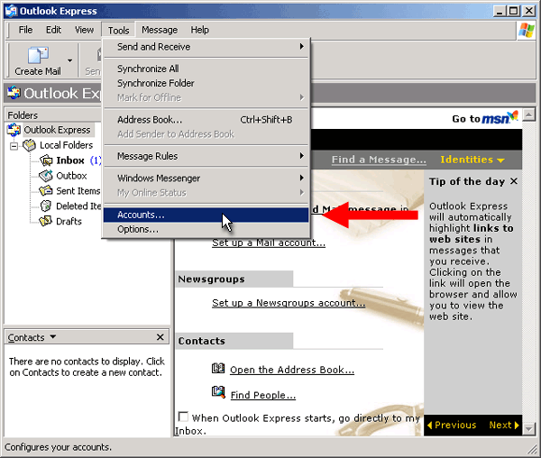
5) Click on the 'Add' / 'Directory Service...' menu.
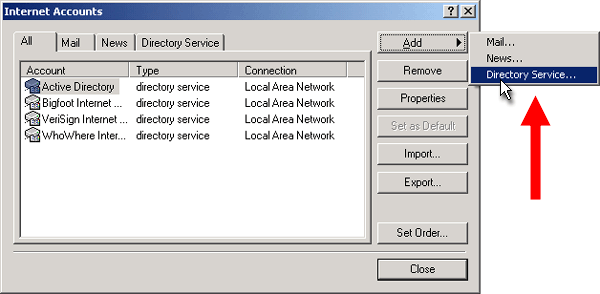
6) Set the 'Internet directory (LDAP) server' property to 'localhost', then click 'Next'.

7) Select 'No' option on the 'Check E-mail Addresses' dialog. Click on 'Next'.
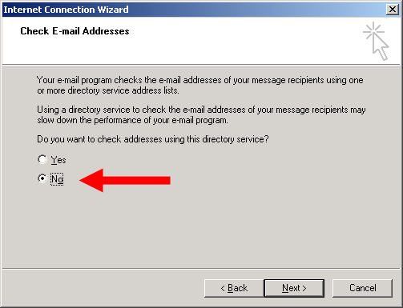
8) Edit the properties of the created LDAP directory service.
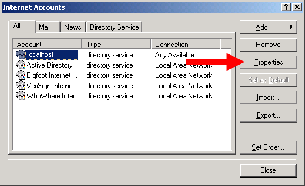
9) Input the name of the Directory Service Account (e.g. 'Gmail Address Book'),
then select the 'Advanced' page.
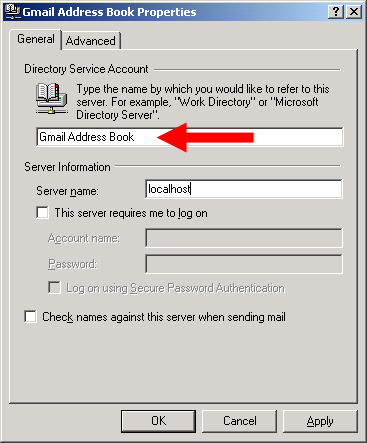
10) Set the 'Service Port Number' property to '9080'. Click on the 'Apply'.
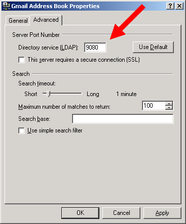
11) Create a new mail.
Click on the 'To' header field, then click on 'Search' button.
Enter the information of the person you want to look up in the box, then click 'Search'.
Do not include any commas, periods etc.
Matching in LDAP is done on a partial equality (ie. 'ohn' will match 'Johnson',
'@' or '*' special symbols will return all of the contacts).
Note: for the higher security set the 'ldap.allowed.hostnames' configuration option's value to 'localhost'.
The authentication and the HTTP communication between Google
and GCALDaemon is secure (SSL) and cannot be intercepted by a third party.
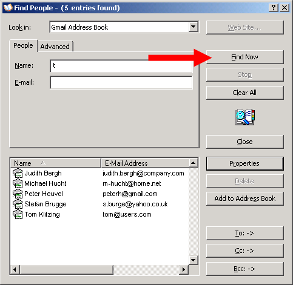
Versitcard or vCard is a file format standard for personal data interchange.
GCALDaemon exports all your contacts in vCard format into 'GCALDaemon/work/vcard' directory.
With this feature you can
- send your Gmail contacts to your mobile or PDA
- attach your Gmail contacts an email message
- compose emails offline (LDAP server uses this vCards in offline mode)
GCALDaemon supports several character encodings, such as 'quoted' (Mozilla style),
'native' (Windows/Mac style) or 'utf-8' (Lotus Notes style).
You can use the 'ldap.vcard.encoding' property to set the suitable
character encoding that is supported by your software environment.
The LDAP service also exports all contacts in CSV, XML and HTML format
('work/vcard/contacts.csv', 'work/vcard/contacts.xml' and 'work/vcard/contacts.html').
1) Left click on the IR icon on Taskbar, then select the 'Transfer Files' menu.
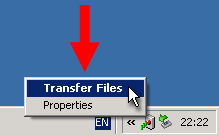
2) Click to select a vCard (.vcf) file from 'GCALDaemon/work/vcard' folder, then click 'Send'.
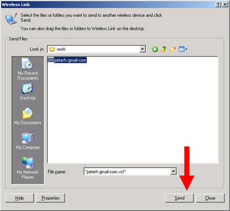
3) Your mobile will prompt you to save this vCard.
If you select 'Accept', the vCard will be saved to your mobile's Address Book.
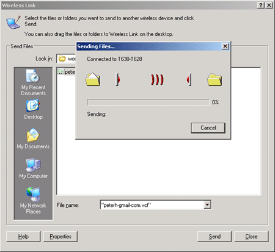
1) Put a 'work.dir' property into 'conf/gcal-daemon.cfg'
to specify the work directory of GCALDaemon.
This directory is the 'GCALDaemon/work' folder by default.
For people that use multiple operating systems it is handy that the work
directory is another directory.
Also, it's more secure if the work files wouldn't reside in the program
directory but on eg. an encrypted partition.
Note: After you set up a new directory,
you may copy the old work folder's content
into the new one.
# GCALDaemon's work directory
work.dir=d:/secure/work
2) If you use Google Apps For Your Domain you may need to clear a captcha for your email account.
Visit
https://www.google.com/a/yourdomain.org/UnlockCaptcha
then enter your email username and password, and the letters in the distorted picture.
Be sure to replace 'yourdomain.org' with your domain name.
3) Optionally start the 'service-install.bat' to install GCALDaemon as Windows service
(on UNIX-compatible systems put GCALDaemon into 'init', 'launchd' or 'rc' script).
Before uninstall GCALDaemon, you must stop and uninstall this service
(with 'service-stop.bat' and 'service-uninstall.bat').
Please note, this is the last step in the setup/configuration process,
do not install the service while GCALDaemon is not running properly.
On Vista, it's not enough to be in the Administrators group,
you need to either be actually logged on as the Administrator.
A) In START menu click on the 'Command Prompt'
B) Right click on it and select 'Properties'
C) In 'Shortcut' tab, click on 'Advanced...'
D) Tick the 'Run as Administrator'
E) Run 'Command Prompt' and in click 'Continue' in 'User Account Control' box
F) Now you are in administrator mode
G) Type 'cd [gcaldaemon installation directory]\bin'
H) Execute 'service-install.bat'
I) Execute 'service-start.bat'
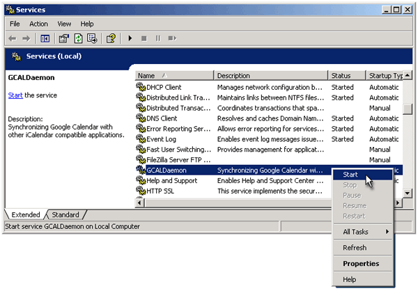